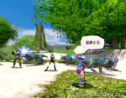

.
Å°The first worldwide multiplayer online RPG for the
console.Å°
Explore the online adventure world with other
players from around the world
through the Internet in Phantasy Star Online
(abbreviated hereafter as PSO).
Just connect to the Internet, the PSO world is
right there 24 hours a day.
(24 hours equal 1000 beats.)
*ÅeBeatsÅh is the worldwide Internet
time created by SWATCH in Switzerland.
The main characters in PSO are the actual players
online.
Meet other people, cooperate with each other
or plot against each otherÅc..
Enjoy the true excitement of an RPG that no one
has ever experienced before.
.
|
|

|
 |
.
Å°Adventure with other people from
all over the world!Å°
Other players online wonÅft just be your friends in your neighborhood.
There is a chance for all online players to meet other players from
around the world.
.
|
.
Å°No Language barrier in the game.Å°
There arenÅft many chances to get to know people in other countries,
states or even in other cities in real life.
Moreover, itÅfs hard to communicate with people from different countries.
But relax! The Word Select System in PSO enables players
to interact with people of all nationalities.
Just enjoy the adventure and make more friends!
.
|
.
Å°4-Player Real Time BattleÅ°
In PSO, up to 4 players can make a group with the Real Time Online
Battle System.
Each player has to be alert and cooperate with each other
to fight off the ferocious monsters in the game.
.
|
.
Å° The offline adventure is also
fun! Å°
Players donÅft have to access the Internet to
enjoy the game.
NPCÅfs (Non Playerable Characters) will support
players during the adventure.
Battle against the dragon with NPCÅfs, or find
items
while NPCÅfs are holding the door by pushing
a button.
Players can enjoy the ÅgPlay-with-friendsÅh feeling
during the game
even if they are not using the online play.
These above reasons show why PSO is THE Online
Game
to give players a brand new experience in gaming.
.
|
|